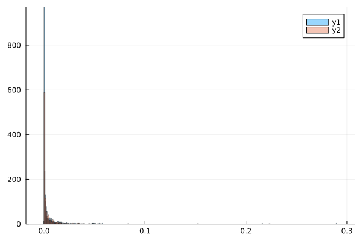

Model Battle
The analysis below is also available in notebook form.
Note. The @threads call in this analysis takes about 4 hours to complete on a 2018 MacBook Pro.
We compare the predictive performance of several tumor growth models on data collected in Laleh et al. (2022) "Classical mathematical models for prediction of response to chemotherapy and immunotherapy", PLOS Computational Biology". In particular, we determine whether differences observed are statistically significant.
In addition to classical models, we include a 2D generalization of the generalized Bertalanffy model, bertalanffy2, and some 1D and 2D neural ODE's. The 2D models still model a single lesion feature, namely it's volume, but add a second latent variable coupled to the volume, effectively making the model second order. For further details, refer to the TumorGrowth.jl package documentation.
Conclusions
We needed to eliminate about 10% of patient records because of failure of the neural network models to converge before parameters went out of bounds. A bootstrap comparison of the differences in mean absolute errors suggest that the generalized Bertalanffy model performs significantly better than all other models, with of the exception the 1D neural ODE. However, in pair-wise comparisons the neural ODE model was not significantly better than any model. Results are summarised in the table below. Arrows point to bootstrap winners in the top row or first column.
| logistic | classical_bertalanffy | bertalanffy | bertalanffy2 | 1D neural | 2D neural | |
|---|---|---|---|---|---|---|
| gompertz | draw | draw | ↑ | draw | draw | ← |
| logistic | n/a | draw | ↑ | draw | draw | ← |
| classical_bertalanffy | draw | n/a | ↑ | draw | draw | ← |
| bertalanffy | ← | ← | n/a | ← | draw | ← |
| bertalanffy2 | draw | draw | ↑ | n/a | draw | ← |
| 1D neural | draw | draw | draw | draw | n/a | ← |
dir = @__DIR__
using Random
using Statistics
using TumorGrowth
using Lux
using Plots
import PrettyPrint.pprint
using PrettyTables
using Bootstrap
using Serialization
using ProgressMeter
using .ThreadsData ingestion
Collect together all records with at least 6 measurements, from the data
records = filter(patient_data()) do record
record.readings >= 6
end;Here's what a single record looks like:
pprint(records[13])@NamedTuple{Pt_hashID::String, Study_Arm::InlineStrings.String15, Study_id::Int64, Arm_id::Int64, T_weeks::Vector{Float64}, T_days::Vector{Int64}, Lesion_diam::Vector{Float64}, Lesion_vol::Vector{Float64}, Lesion_normvol::Vector{Float64}, response::InlineStrings.String7, readings::Int64}(
Pt_hashID="d9b90f39d6a0b35cbc230adadbd50753-S1",
Study_Arm=InlineStrings.String15("Study_1_Arm_1"),
Study_id=1,
Arm_id=1,
T_weeks=[0.1, 6.0, 12.0, 18.0,
24.0, 36.0, 40.0, 42.0,
48.0],
T_days=[-16, 39, 82, 124, 165,
249, 277, 292, 334],
Lesion_diam=[17.0, 18.0, 16.0,
9.0, 8.0, 9.0, 7.0,
7.0, 7.0],
Lesion_vol=[2554.76, 3032.64, 2129.92,
379.08, 266.24, 379.08,
178.36, 178.36, 178.36],
Lesion_normvol=[0.000414516882387563,
0.00049205423531127,
0.000345585416295432,
6.15067794139087e-5,
4.3198177036929e-5,
6.15067794139087e-5,
2.89394037571615e-5,
2.89394037571615e-5,
2.89394037571615e-5],
response=InlineStrings.String7("flux"),
readings=9,
)Neural ODEs
We define some one and two-dimensional neural ODE models we want to include in our comparison. The choice of architecture here is somewhat ad hoc and further experimentation might give better results.
network = Chain(
Dense(1, 3, Lux.tanh, init_weight=Lux.zeros64),
Dense(3, 1),
)
network2 = Chain(
Dense(2, 2, Lux.tanh, init_weight=Lux.zeros64),
Dense(2, 2),
)
n1 = neural(Xoshiro(123), network) # `Xoshiro` is a random number generator
n2 = neural2(Xoshiro(123), network2)Neural2 model, (times, p) -> volumes, where length(p) = 14
transform: logModels to be compared
model_exs =
[:gompertz, :logistic, :classical_bertalanffy, :bertalanffy, :bertalanffy2, :n1, :n2]
models = eval.(model_exs)7-element Vector{Any}:
gompertz (generic function with 1 method)
logistic (generic function with 1 method)
classical_bertalanffy (generic function with 1 method)
bertalanffy (generic function with 1 method)
bertalanffy2 (generic function with 1 method)
neural (12 params)
neural2 (14 params)Computing prediction errors on a holdout set
holdouts = 2
recs = records;
errors = fill(Inf, length(recs), length(models))
p = Progress(length(recs))
@threads for i in eachindex(recs)
record = records[i]
times, volumes = record.T_weeks, record.Lesion_normvol
comparison = compare(times, volumes, models; holdouts, flag_out_of_bounds=true)
errors[i,:] = TumorGrowth.errors(comparison)
next!(p)
end
finish!(p)Progress: 100%|███████████████████████████████████████████████████████████████████████| Time: 3:28:06serialize(joinpath(dir, "errors.jls"), errors)Bootstrap comparisons (neural ODE's excluded)
Because the neural ODE errors contain more NaN values (because of parameters going out of bounds), we start with a comparison that excludes them.
bad_error_rows = filter(axes(errors, 1)) do i
es = errors[i,1:5]
any(isnan, es) || any(isinf, es) || max(es...) > 0.1
end
proportion_bad = length(bad_error_rows)/size(errors, 1)
@show proportion_bad0.0171606864274571That's less than 2%. Let's remove them:
good_error_rows = setdiff(axes(errors, 1), bad_error_rows);
errors = errors[good_error_rows,:];Errors are evidently not normally distributed (and we were not able to transform them to approximately normal):
plt = histogram(errors[:, 1], normalize=:pdf, alpha=0.4)
histogram!(errors[:, 5], normalize=:pdf, alpha=0.4)
plt
savefig(joinpath(dir, "errors_distribution.png"))We deem a student t-test inappopriate and instead compute bootstrap confidence intervals for pairwise differences in model errors:
confidence_intervals = Array{Any}(undef, length(models) - 2, length(models) - 2)
for i in 1:(length(models) - 2)
for j in 1:(length(models) - 2)
b = bootstrap(
mean,
errors[:,i] - errors[:,j],
BasicSampling(10000),
)
confidence_intervals[i,j] = only(confint(b, BasicConfInt(0.95)))[2:3]
end
end
confidence_intervals5×5 Matrix{Any}:
(0.0, 0.0) (-0.000106171, 4.5993e-5) (-3.32853e-5, 3.28481e-5) (3.62648e-5, 0.000197122) (-0.00101014, -1.12206e-5)
(-4.66776e-5, 0.000105491) (0.0, 0.0) (-7.49426e-5, 0.000137128) (1.89733e-5, 0.000258914) (-0.000996457, 3.65223e-5)
(-3.1557e-5, 3.36873e-5) (-0.000135553, 7.8536e-5) (0.0, 0.0) (3.88732e-5, 0.000196808) (-0.000980241, -2.33476e-5)
(-0.000196016, -3.84557e-5) (-0.000258979, -1.9475e-5) (-0.000197848, -3.71933e-5) (0.0, 0.0) (-0.00109854, -0.000162552)
(1.096e-5, 0.00101105) (-4.5169e-5, 0.00100691) (5.82662e-6, 0.00100553) (0.000169578, 0.00109791) (0.0, 0.0)We can interpret the confidence intervals as follows:
if both endpoints -ve, row index wins
if both endpoints +ve, column index wins
otherwise a draw
winner_pointer(ci) = ci == (0, 0) ? "n/a" :
isnan(first(ci)) && isnan(last(ci)) ? "inconclusive" :
first(ci) < 0 && last(ci) < 0 ? "←" :
first(ci) > 0 && last(ci) > 0 ? "↑" :
"draw"
tabular(A, model_exs) = NamedTuple{(:model, model_exs[2:end]...)}((
model_exs[1:end-1],
(A[1:end-1, j] for j in 2:length(model_exs))...,
))
pretty_table(
tabular(winner_pointer.(confidence_intervals), model_exs[1:5]),
show_subheader=false,
)┌───────────────────────┬──────────┬───────────────────────┬─────────────┬──────────────┐
│ model │ logistic │ classical_bertalanffy │ bertalanffy │ bertalanffy2 │
├───────────────────────┼──────────┼───────────────────────┼─────────────┼──────────────┤
│ gompertz │ draw │ draw │ ↑ │ ← │
│ logistic │ n/a │ draw │ ↑ │ draw │
│ classical_bertalanffy │ draw │ n/a │ ↑ │ ← │
│ bertalanffy │ ← │ ← │ n/a │ ← │
└───────────────────────┴──────────┴───────────────────────┴─────────────┴──────────────┘
Bootstrap comparison of errors (neural ODE's included)
bad_error_rows = filter(axes(errors, 1)) do i
es = errors[i,:]
any(isnan, es) || any(isinf, es) || max(es...) > 0.1
end
proportion_bad = length(bad_error_rows)/size(errors, 1)
@show proportion_bad0.1We remove the additional 10%:
good_error_rows = setdiff(axes(errors, 1), bad_error_rows);
errors = errors[good_error_rows,:];And proceed as before, but with all columns of errors (all models):
confidence_intervals = Array{Any}(undef, length(models), length(models))
for i in 1:length(models)
for j in 1:length(models)
b = bootstrap(
mean,
errors[:,i] - errors[:,j],
BasicSampling(10000),
)
confidence_intervals[i, j] = only(confint(b, BasicConfInt(0.95)))[2:3]
end
end
pretty_table(
tabular(winner_pointer.(confidence_intervals), model_exs),
show_subheader=false,
)┌───────────────────────┬──────────┬───────────────────────┬─────────────┬──────────────┬──────┬────┐
│ model │ logistic │ classical_bertalanffy │ bertalanffy │ bertalanffy2 │ n1 │ n2 │
├───────────────────────┼──────────┼───────────────────────┼─────────────┼──────────────┼──────┼────┤
│ gompertz │ draw │ draw │ ↑ │ draw │ draw │ ← │
│ logistic │ n/a │ draw │ ↑ │ draw │ draw │ ← │
│ classical_bertalanffy │ draw │ n/a │ ↑ │ draw │ draw │ ← │
│ bertalanffy │ ← │ ← │ n/a │ ← │ draw │ ← │
│ bertalanffy2 │ draw │ draw │ ↑ │ n/a │ draw │ ← │
│ n1 │ draw │ draw │ draw │ draw │ n/a │ ← │
└───────────────────────┴──────────┴───────────────────────┴─────────────┴──────────────┴──────┴────┘
This page was generated using Literate.jl.